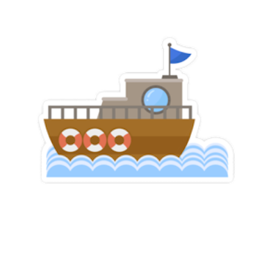
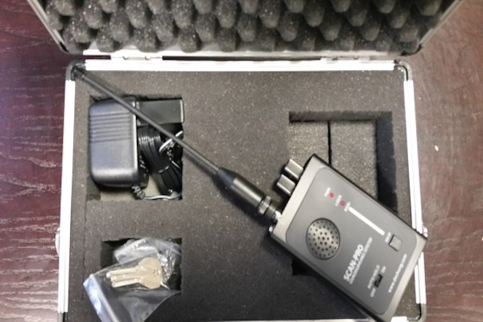

검색
HOME
ABOUT
SERVICE
CONTACT
치밀하고 은밀하게
TAMO님 유투브 따라해보기
OUR PLAN?

완벽한 어선 준비
넉넉한 오징어 저장공간과 어부들을 위한 휴게소 제공
휴게소 내에 따뜻한 커피 및 냉장고, 간식 등 보유
쪽잠을 위한 담요와 베개 구비 완료
해상 확인을 위한 최고급 쌍안경 보유
24시간 조업을 위한 두명의 선장 보유
경찰 무전 도청장치 구비
도청장치를 이용한 단속 대비
프로그래머와 함께 작업해 걸릴 걱정 0!
경찰 무전을 몰래 듣고 신속 대응 가능
해상 확인용 쌍안경과 함께라면 걱정 없다!

투명 망토 구비
기습 단속 시 배를 숨길 수 있는 투명 망토 구비 완료
실제 여러번의 단속 무사 회피
배에서, 그리고 총알 오징어 배송 시 사용
절대 들키지 않는 투명 망토!